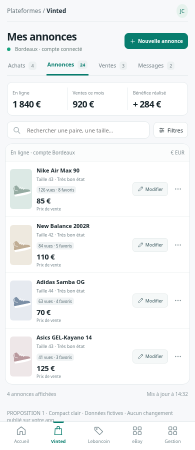
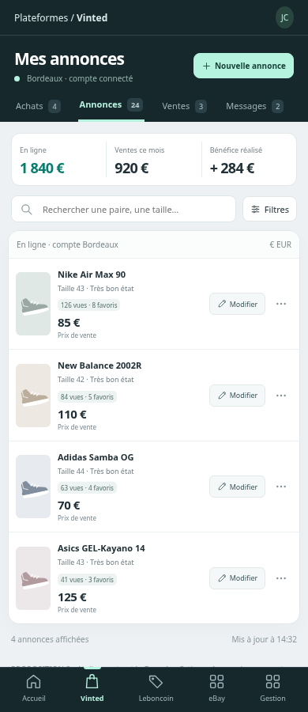
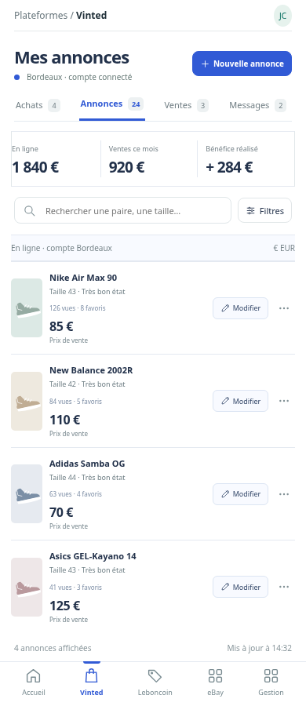

Mêmes fonctions, trois façons d’organiser ta boutique.
Lumineux, discret, facile à lire.

Une navigation affirmée, des listes légères.

Sobre, précis, centré sur les paires et les prix.

Propositions avec données fictives. Aucun changement en production.